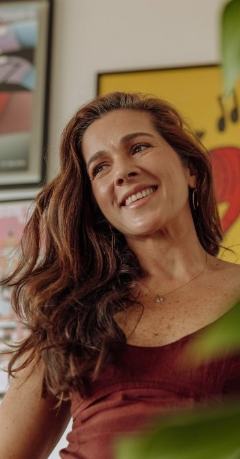
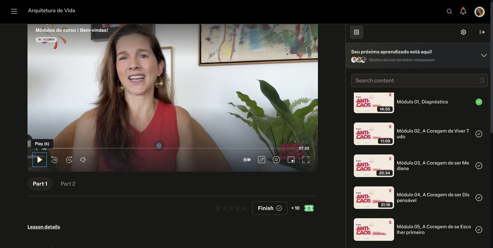
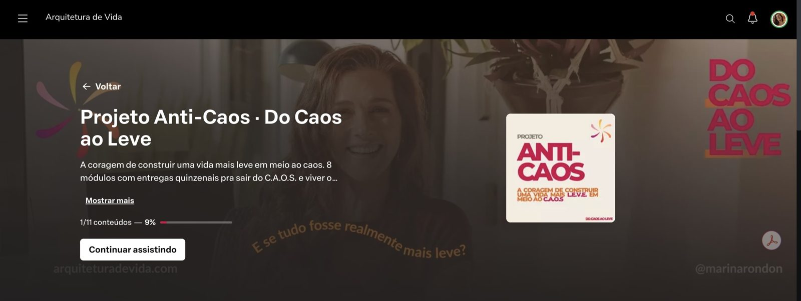
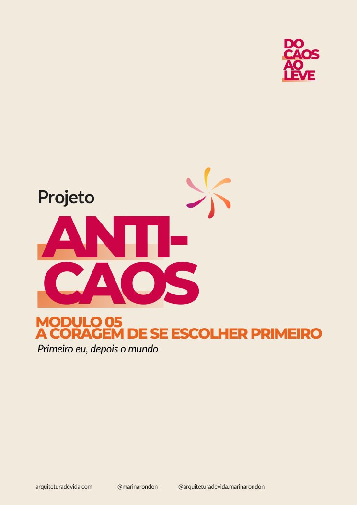
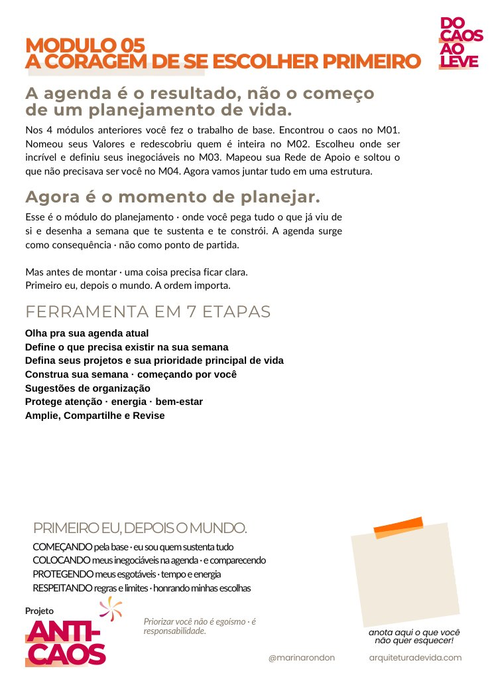
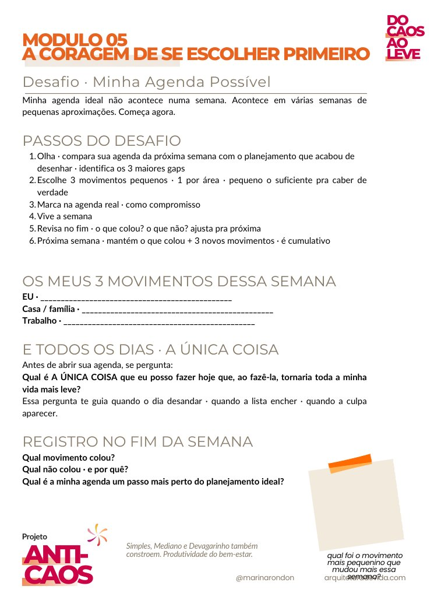
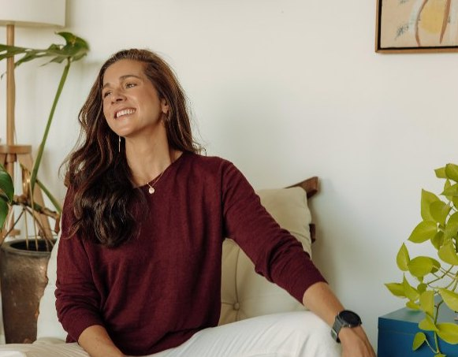
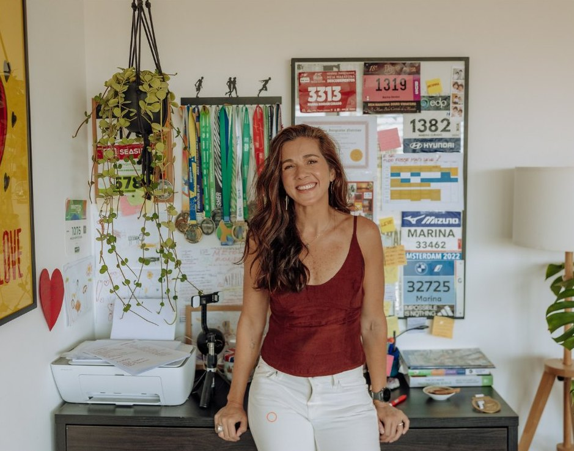

Projeto Anti-Caos
Do caosao leve
A coragem de construir uma vida mais leve em meio ao caos.
Um programa para reorganizar a sua rotina: escolher melhor, distribuir a carga e abrir espaço para uma vida mais leve.
Para mulheres com múltiplos papéis.
- 8 módulos
- 4 meses
- Aulas gravadas + encontros ao vivo
- Comunidade no WhatsApp
- Entrada imediata

Projeto Anti-Caos
Um caminho para construir uma rotina mais leve.
O sistema Do Caos ao Leve: planejamento e organização que integra gestão de tempo e energia na vida real de mulheres com múltiplos papéis.
8 módulos + ferramentas práticas + encontros ao vivo




Área de membros no computador e no celular, e o material de cada módulo: ferramentas, desafio e conteúdo extra.
A vida do C.A.O.S.
Fazemos demais. Descansamos de menos. E nos abandonamos no caminho.
Cansadas de estarem cansadas.
Eu já vivi isso. Talvez você esteja vivendo agora.
- A lista nunca acaba e tudo é urgente.
- Você se encaixa no tempo que sobra.
- "Ninguém faz como eu": faz tudo sozinha.
- Quer ser perfeita em tudo.
- Descansa só quando acabar (e nunca acaba).
- Vive no automático, reagindo.
- Os sonhos ficam para "quando eu finalmente…"
Verdades que precisei aceitar
Para sair do caos, eu precisei aceitar seis verdades
Simples e difíceis ao mesmo tempo.
- Sou finita.Sou um ser humano, com necessidades físicas, emocionais, mentais e sociais. Eu não cabia inteira na minha agenda.
- Os recursos são esgotáveis.Tempo, energia, foco e paciência são limitados. Esgotam-se.
- A lista nunca vai ter fim.A vida é como um cesto de roupa suja: quando termina a lavagem, já tem outro cesto à espera.
- A vida não vai acalmar.Ela muda de fase. A calma vem da mente que aprende a respirar dentro do caos.
- A perfeição é onde a vida não cabe.Quando eu quero tudo perfeito, paro de viver.
- Não fui feita para fazer sozinha.Esse peso todo nos meus ombros não é meu: é construído.
Se não admitimos as verdades, tentamos controlar o futuro e não escolhemos.
É preciso escolher.
Antes e depois
Do C.A.O.S. ao L.E.V.E.
Na prática, você
- Redescobre os seus papéis essenciais
- Planeja tempo e energia
- Cria uma rotina possível
- Constrói uma produtividade do bem-estar
“Quero aproveitar o espaço e agradecer à Marina por proporcionar novos olhares, momentos de nós com nós mesmas, e nos fazer convites a reflexões que nos fazem melhores. E a todas, por estarem aqui e serem inspirações umas para as outras!”
O problema não é você.
Não é falta de disciplina. É falta de sistema.
Um sistema para fazer o que importa, no tempo certo, com presença, em vez de tentar dar conta de tudo.
Como funciona
E se tudo fosse realmente mais leve?
É toda a estrutura que construí nos últimos anos, agora sistematizada. Um programa completo para você aplicar o sistema Do Caos ao Leve na sua vida.
Não é um curso de produtividade: é uma reorganização da sua rotina.
Aulas gravadas
Os 8 módulos em vídeo e em áudio. Você assiste ou ouve quando puder.
Encontros ao vivo
Para aprofundar, tirar dúvidas e trocar. Ficam gravados.
Comunidade no WhatsApp
Ninguém precisa fazer sozinha. Um grupo com todas as alunas, para as trocas e os convites dos encontros. Novas alunas entram no início de cada mês.
O caminho · 6 coragens
Tudo começa e termina com coragem
É preciso fazer algo novo para ter novos resultados. Um ato de coragem todos os dias. No programa, passamos pelas 6 coragens para uma vida mais L.E.V.E.
Oito módulos, um por vez. Toque em cada um para ver o que você faz e com o que sai.
01DiagnósticoAntes de mudar, é preciso ver.
02Coragem de Viver Tudo eu me expandoSair da redução do "ou" e viver a expansão do "e".
03Coragem de Ser Mediana eu aceitoIncrível no que importa. Mediana no resto.
04Coragem de Ser Dispensável eu solto o controleQuando me percebo substituível, sinto leveza.
05Coragem de Se Escolher eu me priorizoPrimeiro eu, depois o mundo.
06Coragem de Fazer Menos eu escolho o essencialO quanto você faz é menos importante do que o que você faz.
07Coragem de Descansar eu descansoParar antes que a vida te pare.
08L.E.V.E. · SustentaçãoEu reorganizo minha vida para sustentar escolhas.
Eu me expando · eu me priorizo · eu solto o controle · eu aceito · eu escolho o essencial · eu descanso.
Você faz no seu tempo. A minha recomendação é viver cada módulo por 15 dias, colocando em prática antes de seguir. Assim, o programa todo leva cerca de quatro meses.
Escolher é inevitável: quando não escolhemos, alguém escolhe por nós. É a sua vida: faça dela a sua escolha.
Ao final
O que você recebe
- Aulas gravadas dos 8 módulos, em vídeo e em áudio
- Ferramentas práticas em cada módulo: guias, mapas, modelos de agenda e de listas, planilha e Notion
- Encontros ao vivo ao longo do ano, gravados
- Comunidade no WhatsApp com todas as alunas
- O seu Plano L.E.V.E.
- Acesso por 12 meses

Seja honesta com você
Para quem é (e para quem não é)
É para você se
- Vive múltiplos papéis: mãe, profissional, parceira, filha
- Sente que a lista virou a sua vida
- Descansa com culpa
- Está pronta para agir
Não é para você se
- Busca fórmula mágica ou milagre sem processo
- Acredita que informação sozinha traz mudança
- Prefere continuar fazendo tudo sozinha
- Aceita que a sua saúde e os seus sonhos fiquem para depois
Quem conduz
Marina Rondon
Arquiteta de vida
Há 4 anos, ajudo mulheres a terem coragem de viver uma vida alinhada com quem são e de cuidarem mais de si.
Depois da maternidade e aos 40 anos, mudei de país e redesenhei a minha vida, mais alinhada com quem eu queria ser e com os meus valores. Uni a arquitetura, a saúde integral e o comportamento humano. Assim nasceu a Arquitetura de Vida. E o Anti-Caos é o sistema que eu construí para sair do meu próprio caos.
- Arquiteta, com 20 anos no corporativo em liderança
- Integrative Health Coach pelo IIN (Nova York) e Health Coach pela Nós Escola (BR/PT)
- Especialista em Inteligência Emocional e Gestão da Mudança · pós-graduanda em Neurociência e Comportamento
- Fundadora da Arquitetura de Vida e criadora do Método Rondon e do sistema Do Caos ao Leve
- Mãe e maratonista

Método Rondon · 6 princípios
- Autoconhecimento
- Autocuidado
- Autorresponsabilidade
- Priorização
- Simplicidade
- Mentalidade
O que sustenta o Do Caos ao Leve e todos os projetos da Arquitetura de Vida.
Você não sai do Anti-Caos só com organização: você sai com um jeito novo de escolher e de cuidar mais de você.
Quem já viveu
O que dizem as mulheres que já caminharam comigo
“Minha vida já está mais leve desde que te conheci.”
“Agradecer por você sempre nos convidar a viver. A estarmos vivas, leves e felizes pra nós e para os nossos.”
“Fiquei feliz com o resultado, principalmente com a leveza interna de poder acrescentar coisas novas e mudar a prioridade. Estou sendo leve nisso também, me cobrando menos. Acho que já estou sendo mediana sem o foco de ser!”
“Ajuda a entender o caos que vivemos e que existem formas de sair dele e ter uma vida mais leve e saudável.”
“Me ajudou a entender que, estando bem comigo, estarei bem com a minha família e com todos à minha volta. Que cuidar de mim é primordial antes de qualquer coisa.”
Nas avaliações, alunas e mentoradas contam que saem com mais clareza do que é essencial, e todas indicariam a experiência para outra mulher.
Investimento
Eu quero o Anti-Caos
Projeto Anti-Caos · entrada imediata
ou R$ 860 à vista
Fora do Brasil, o checkout da Hotmart converte o valor para a sua moeda.
- 8 módulos gravados
- Ferramentas e PDFs
- Encontros ao vivo
- Comunidade no WhatsApp
- Plano L.E.V.E.
- Acesso por 12 meses
Rascunho: falta colar o link do checkout da Hotmart.
Entre sem medo. Se em 15 dias você sentir que não é para você, devolvo 100% do valor direto pela Hotmart, sem precisar justificar.
Perguntas frequentes
Ficou alguma dúvida?
Como recebo o acesso?
Assim que a compra é confirmada, você recebe um e-mail da Hotmart com o acesso à área de membros e já pode começar.
No início de cada mês, as novas alunas entram juntas no grupo do WhatsApp, para acompanhar as trocas e receber os convites dos encontros ao vivo.
Quando posso começar e quanto tempo dura?
Você começa assim que se inscreve e faz no seu tempo. A minha recomendação é um módulo a cada 15 dias: assim, os 8 módulos levam cerca de quatro meses.
As aulas ficam gravadas? Por quanto tempo tenho acesso?
Sim. Aulas, materiais e as gravações dos encontros ficam na área de membros, e você tem acesso por 12 meses a partir da compra.
Como funciona o pagamento?
Em até 12x de R$ 88,94, ou R$ 860 à vista. O pagamento é pela Hotmart: fora do Brasil, o checkout converte o valor para a sua moeda e mostra as formas de pagamento do seu país.
E se eu não conseguir acompanhar no ritmo?
O programa foi pensado para a vida real. Os 15 dias por módulo são uma recomendação, não uma regra: tudo fica gravado e você retoma de onde parou, sem culpa.
Ser mediana também vale aqui.
Como funcionam os encontros ao vivo?
Acontecem ao longo do ano, pelo Google Meet, abertos a todas as alunas, em qualquer módulo que estejam. Os convites chegam pelo grupo do WhatsApp. Trazemos o tema da vez, dúvidas e trocas. Os encontros ficam gravados, e o grupo no WhatsApp segue ativo entre um e outro.
E se não fizer sentido para mim?
Você tem 15 dias de garantia. Se não fizer sentido, pede o reembolso direto na Hotmart e recebe 100% do valor, sem precisar justificar.
A coragem de construir uma vida mais l.e.v.e. em meio ao c.a.o.s.
Qual é a única coisa que você pode fazer hoje que tornaria todo o resto mais leve?
Vamos juntas construir o leve em meio ao caos!
Marina Rondon